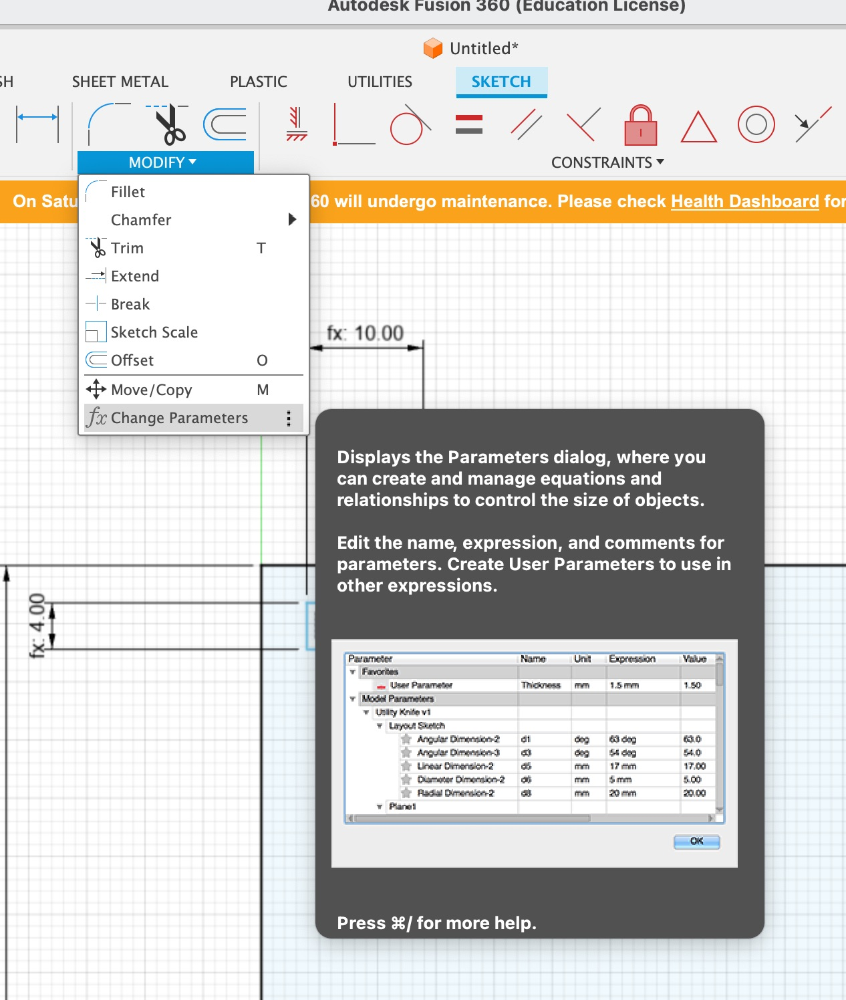
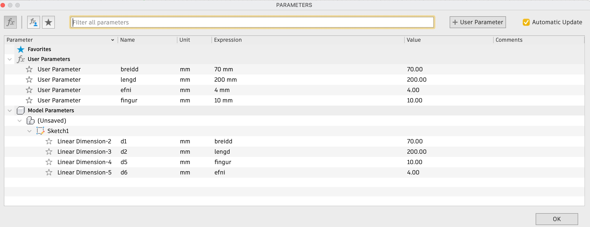
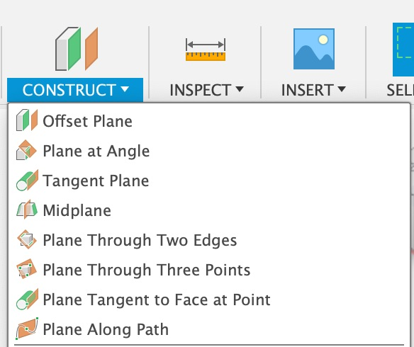
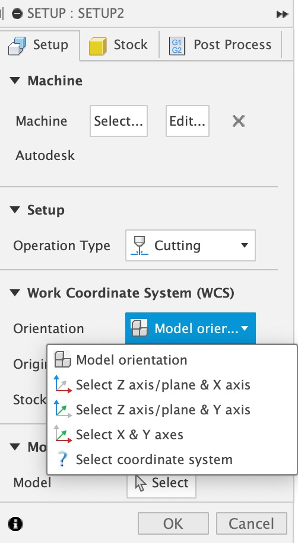
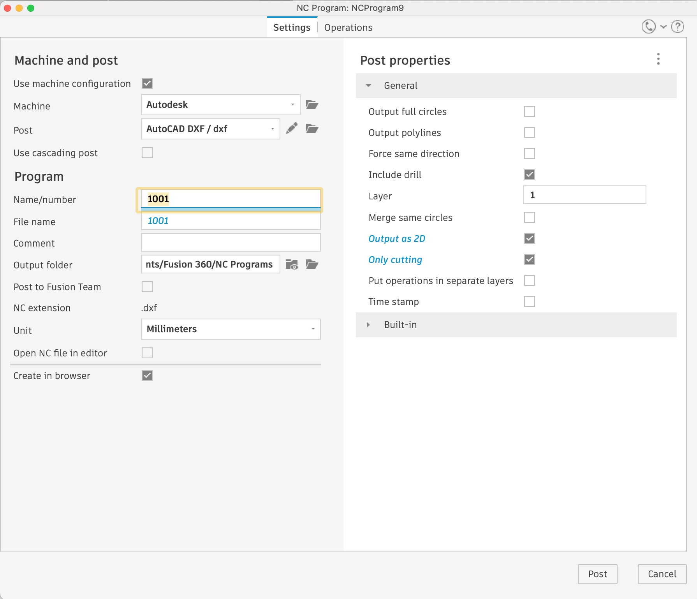

Vínylskurður
Ég ákvað að skera út texta sem mér fannst smá fyndinn. Þetta verkefni var tiltölulega einfalt í framkvæmd. Ég notaði textaeiginleika InkScape til að skrifa hann þar inn og vista sem SVG skjal. Það skjal var svo flutt yfir í tölvuna sem er tengd við Vínilskerann með USB kubbi. Ég vann verkefnið með Brynju, en hún sá um að koma þessu í prent í gegnum tölvuna. Við ákváðum að skipta um lit - nota annað en það sem var í vínylskeranum fyrir og ég hugsa að það hafi verið það sem ég lærði mest af. Þá þarf að stilla vínylinn af, þó bara eftir auga, með viðmiðunarlínum og svo er hægt að færa núllpunkt prentarans til á fletinum með takka á skeranum sjálfum. Textinn var mjög fíngerður og það reyndist bæði erfitt að snyrta hann til með þeim verkfærum sem voru í FabLabinu og að koma honum fyrir á tölvuyfirborðinu. Hafliði ráðlagði okkur að nota límstifti eða glært “coat” af naglalakki, ég á þó hvorugt og því náði ég aðeins að líma neðsta part textans á tölvuna mína. Ég vildi ekki líma allt þegar við vorum í FabLabinu því þá hefði textinn farið allur á hreyfingu. En svona lítur hann út, og ég get ekki beðið eftir að skella naglalakki á hann því mér finnst hann í alvöru koma vel út!
Laserskurður
Ég átti í stökustu vandræðum með þetta verkefni og því mun þessi lýsing ekki endilega vera um hvað þetta gekk vel og auðveldlega fyrir sig heldur um öll mistökin sem ég gerði. Þannig lærir man mest.
Til að byrja með þá á ég erfitt með að finna mér hlut til að búa til ef hann er bara búin til til þess eins að ég hendi honum í næstu flutningum. Ég tók mér því nokkur kvöld á pinterest, youtube og öðrum vefsíðum með gernelgdum hönnunum en komst fljótt að því að flest af því sem fólk er að setja þar inn eru venjulegur geirnegldir kassar. Ég ákvað því að fara gegn þrjósku minni og gera einn slíkann en með smá breytingu því mig langaði líka að sjá hvað ég væri megnug um. Ég vissi að ég gæti vel hannað kassa, en ekki hversu flókinn hann gæti orðið. Tímalega séð sá ég strax að ég hafði ekki tök á að búa til gestaþraut úr kassanum, auk þess sem þær voru oft límdar að einhverju leyti og ég vildi það ekki. Niðurstaðan var því sú að nú væri komin tími til að skipta út pennadósinni minni á skrifborðinu og í staðinn kæmi pennakassi með rennanlegu loki. Hafliði hafði sýnt okkur svipaða hönnun í tíma og ég hafði hana því á bakvið eyrað við hönnun.
Ég notaði Fusion360 til að teikna. Ég byrjaði á að búa til neðstu plötuna, settu parametrana inn þar og teiknaði svo hinar hliðarnar út frá neðstu plötu. Hér fyrir neðan eru helstu parametrar en öll teikningin er unnin upp úr þeim, hvort sem það var með margfeldi þeirra eða deilingu.
Ég lenti svo ekki í neinu veseni fyrr en það kom að því að búa til brautina fyrir lokið á pennakassanum en þar sem ég ætlaði ekki að nota neitt lím þá ákvað ég að búa til fullt af litlum bitum sem voru efni x efni x 2 efni að stærð. Ég gerði svo sömuleiðis göt á löngu hliðarnar á kassanum sem hægt væri að stinga litlu bitunum í gegnum og mynda þannig rás fyrir lokið. Í fyrstu tilraun þá gerðist það einhvern veginn að önnur hliðin snéri baki við parametrana og minnkaði götin þannig að bitarnir pössuðu ekki lengur í gegn. Hafliði ráðlagði mér þá að spegla bara fyrri hönnnun, eftir á er það auðvitað mun þægilegri lausn. Ég hafði hugsað um að gera það en kunni ekki að gera nýtt plan til að spegla um.
Það er gert með að fara í Construct og velja þar Offset plane. Þá gefur Fusion þér valmöguleika um að velja hlið sem planið á að vera samsíða, þú getur svo valið hversu langt frá því yfirborði þig langar að planið sé. Ég valdi 0,5*breidd en þá var planið akkurat í miðju kassans á milli vinstri og hægri hliðar. Þá var líka ekkert mál að spegla og komu götin rétt út!
Þegar ég var orðin þokkalega sátt með hönnunina þá opnaðist nýr heimur af vandamálum. Fyrir það fyrsta ætlaði ég mér alltaf að lokið væri úr þynnri krossviðarplötu en 4mm, td. 3mm, en það var aðeins til plexigler í þeirri þykkt svo ég geymdi það aðeins að klára lokið og ákvað frekar að einbeita mér af því að koma öllu sem átti að vera skorið í krossvið í framleiðslu.
Ég vildi gera próf til að sjá hvort að Kerf-ið sem ég og Júlía Sóley höfðum ákvarðað væri ákjósanlegt. Til að framkvæma Kerf-próf er gott að byrja á því að gera 10x10mm ferhyrninga og skella í laserskurð. Þá má gera ráð fyrir að fyrir skurðinn sé hönnunnin 10cm að lengd en svo snýst Kerf-prófið um að sjá hversu mikið laser-inn sker af hliðunum og styttir þannig hönnunina. Við erum þá með einhverja mælda lengd eftir skurð sem við deilum með þeim 11 þverlínum sem laserinn hefur gert og fengum að Kerf-ið væri 0,1. Sem er mjög lítið. Ég komst þó aldrei í að raunprófa það Kerf á hönnuninni minni því ég átti í stökustu vandræðum með að koma henni í prent. Ég notaði því Kerf sem ég komst að í gegnum tilraunir samnemenda minna. Meira um það seinna.
Ég ætlaði mér semsagt að nota 0,1 Kerf-ið en Fusion vildi ekki setja prófið mitt rétt upp svo ég kæmi því á rétt form. Ég semsagt ætlaði að nota aðra hlið kasssans og skera hann út ásamt einum litlum bita og sjá hvernig þeir enduðu saman en þegar ég fletti því út til að koma í tvívídd las Fusion X-Y ás en ekki Z-Y eins og ég hafði flatt út og því las Fusion aðeins brúnina ofan á hlutunum mínum í tvívídd. Þessu má breyta “Manufacturing” glugga í Fusion en ég komst af því eftir tvær misheppnaðar ferðir í Fablabið. Það er sem sagt gert í Setup og þá er í raun hægt að velja Orientation af því plani sem á að búa til tvívídd úr. Ég var bara með það vitlaust stillt.
Næst bjó ég til “Tool” sem er einnig búið til í “Manufacturing” í Cutting valmyndinni en þar er einmitt valinn 2D Profile. Þar smellti ég á Tool, valdi Laser Cutter og gat þar ákvarðað Kerf-ið, ég valdi að Kerf-ið væri 0,2122.
Þegar man býr til DXF-skjal útfrá útflattri mynd af öllum íhlutum hlutarins síns á að smella á Post-Process, þar er hægt að tilgreina hvernig skrá á að búa til og hvar hún skal vera vistuð. Ótrúlegt en satt lenti ég líka í vandræðum með þetta því að þegar ég átti að velja “Library” til að geyma skjalið á, annars staðar en í Fusion Cloudi, skipaði forritið mér að velja eitthvað library en ég gat ekkert valið. Þá átti semsagt eftir að búa til möppu til að vista skjölin í í tölvunni og samtengja það við forritið. Þetta tók mig góða viku að bölvast í en hófst á endanum.
Og þá var loks komið að því. Ég hafði núna orðið ágæta þekkingu á ferlinu enda búin að endurtaka marga hluti oft. Ég vistaði því AUTODESK DXF skjal í gegnum Post Process og opnaði skjalið svo í InkScape. Fyrst koma skjalið vitlaust skalað inn en ég fann fljótlega út úr því og lagaði. Auk þess hafði ég meiri áhyggjur en þörf var á því ég gleymdi að auðvitað hafði Kerf-ið breytt málunum aðeins. Í Inkscape þurfti svo að breyta línuþykktinni á útlínum, því annars væri þær stærri en laser-inn sjállfur. Línurnar eiga að vera 0,02 mm. Þetta er gert í gegnum Object -> Fill and Stroke -> Stroke Style og breidd línanna stillt þar. Að lokum var skjalið vistað sem SVG skjal sem var svo sent yfir í Laser-skerann með hinni klassísku Print-skipun. Og hér er hluturinn, ekki fullkláraður, en fullprófaður.
Ég var þokkalega ánægð með útkomuna en Kerf-ið reyndist Geirnegnlingu pælingunum mjög vel. Hinsvegar voru litlu bitarnir sem fóru í götin á hægri og vinstri hlið lausar í og hefðu því þurft hærra Kerf en hitt til að tolla almennilega í. Ég hafði þó ekki tíma til þess. Heilt yfir reyndist þetta verkefni mér erfitt, ekki vegna erfiðleikastigs heldur vegna allra þeirra hindrana sem birtust á leiðinni. Ég er því glöð að þekkja núna aðeins á þá botnlanga og í raun stolt af seiglunni að þetta hafi þó hafist að mestu á endanum.